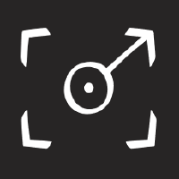

Tanya Nair
CE + EE undergrad @ Johns Hopkins · expected May 2028
AI co-op @ Chewy · NLP researcher @ JHU CLSP
selected experience
ongoing
Chewy · AI Technologist Co-op
Prototype agentic AI systems from problem scoping to stakeholder demos. 1st of 20 teams in the company AI Challenge. Built and deployed (CI/CD on AWS) an internal policy-research tool covering 30+ countries, replacing a 3–5 hour manual process.
Working on LLM simulations of user group studies, building on population-aligned persona generation and Gricea, an open-science platform for conversational AI research. JHU CLSP · ISLE Lab · Undergraduate Researcher
JHU CLSP · ISLE Lab · Undergraduate Researcher
Developing plugins and debugging the MVP for an early-stage startup.
MapApp · Developer
past
Mentored 15 interns across 3 clinical ML projects. Built a hybrid BM25 + FAISS retrieval system over 10,000+ pathology reports, presented to 50+ professionals. Dartmouth Levy Lab · EDIT AI Mentor
Dartmouth Levy Lab · EDIT AI Mentor
recognition
- 1st place · Chewy company-wide AI Challenge, 20 teams
- Winner · Best Data Visualization, HopHacks Fall 2025
- Top 20 in the US · CanSat Competition, top 40 worldwide
- EDUCAUSE · poster 2025, Pipeline scholar 2026
- Published · Journal of Student Research, 2023
areas of interest
- AI/ML: NLP, agents, and multilingual evaluation
- Accessible and sustainable systems
- Space robotics & small satellites
offline
reach out
tnair4[AT]jh[DOT]edu swap the brackets for @ and .